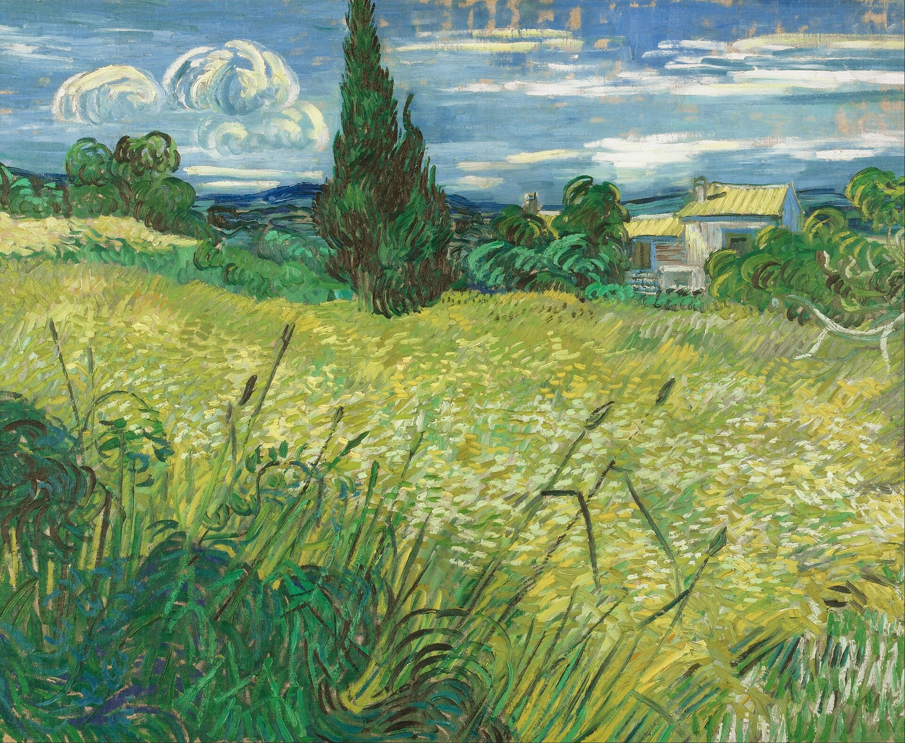
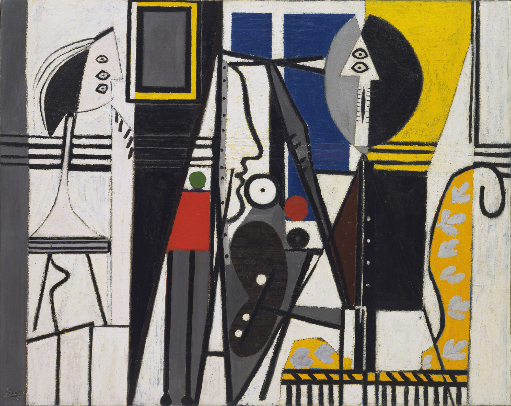
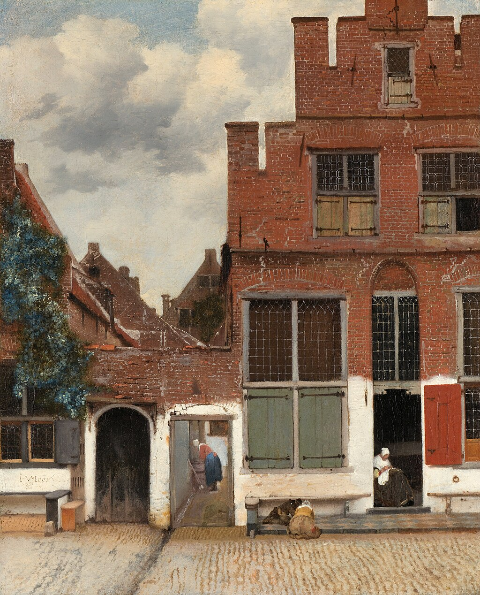
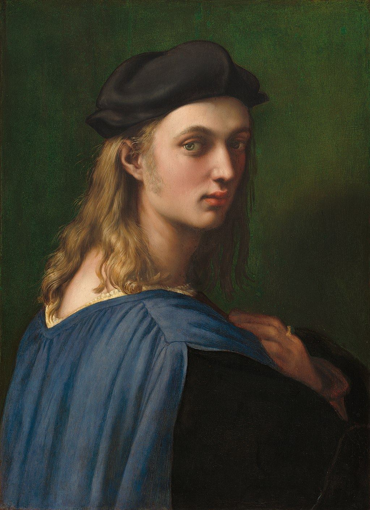
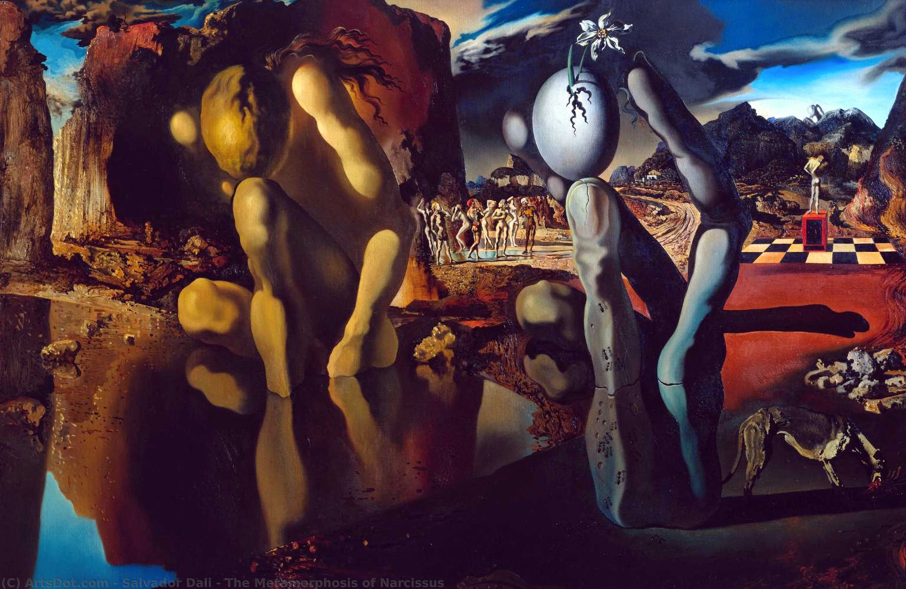
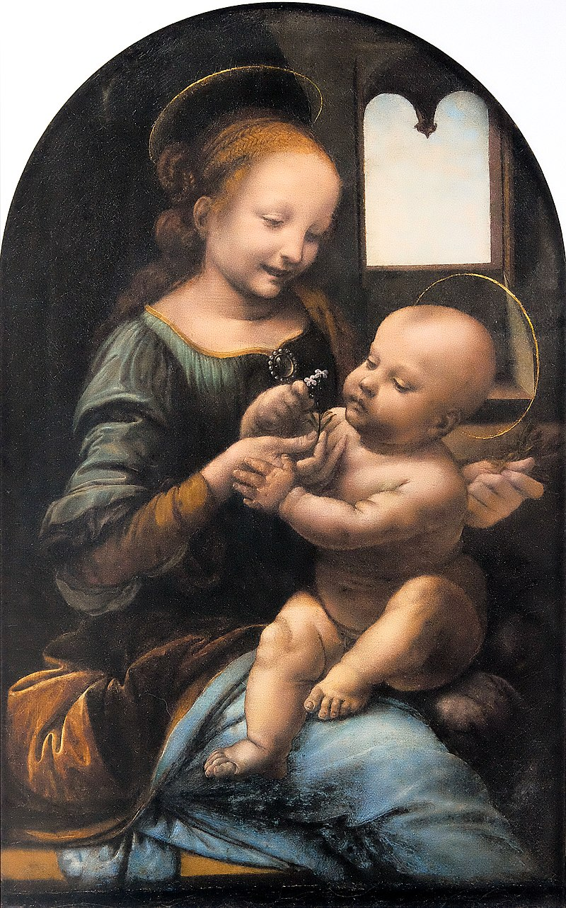
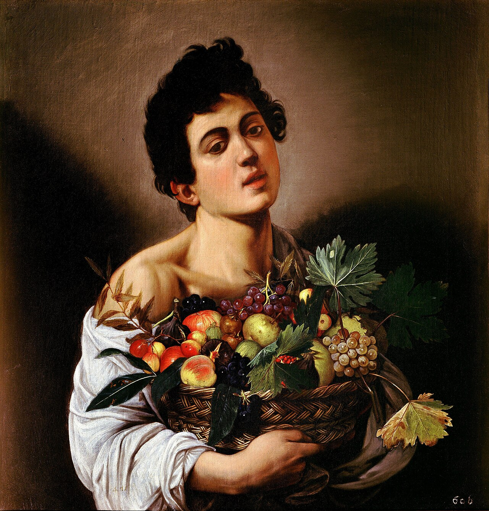
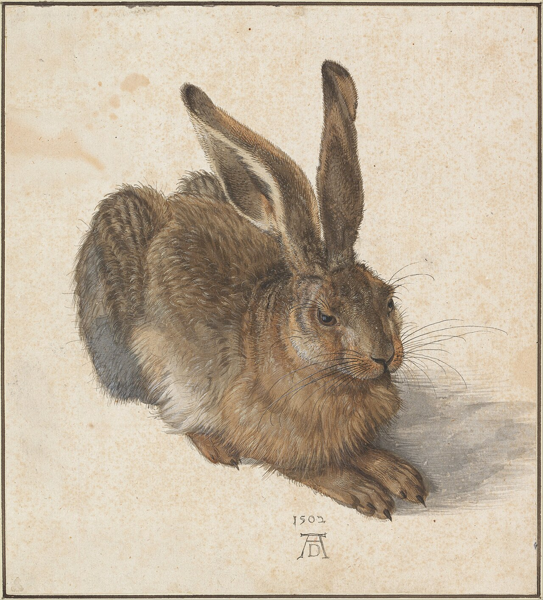
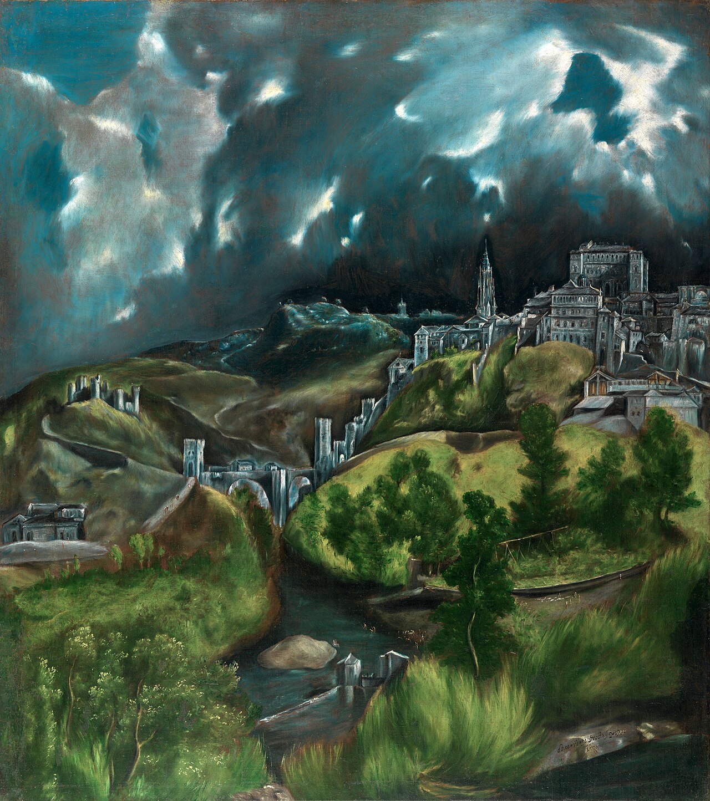

Cypresses and Green Wheat Field

The Painter and His Model

The Little Street

Portrait of Bindo Altoviti

The Metamorphosis of Narcissus

The Benois Madonna

Boy with a Basket of Fruit

Young Hare

View of Toledo